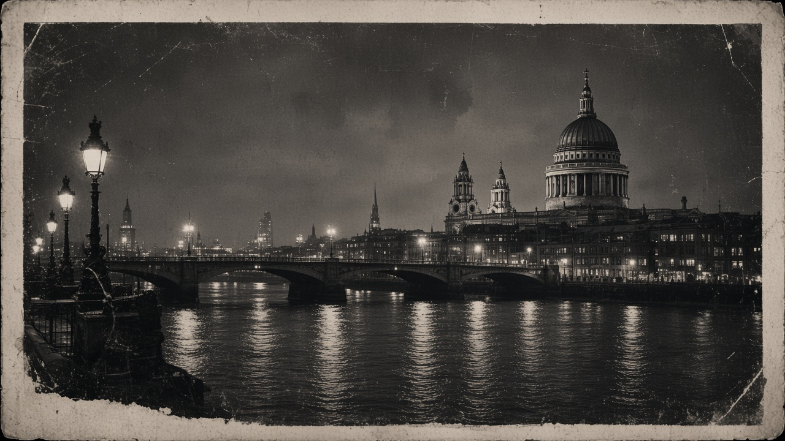

Archive fragments
Select a record to begin analysis.
A person is not found in a single record. She emerges from contradictions.

Android Archive System Human Patterns Lab
File 011
London, 1968
Select a record to begin analysis.
A person is not found in a single record. She emerges from contradictions.
